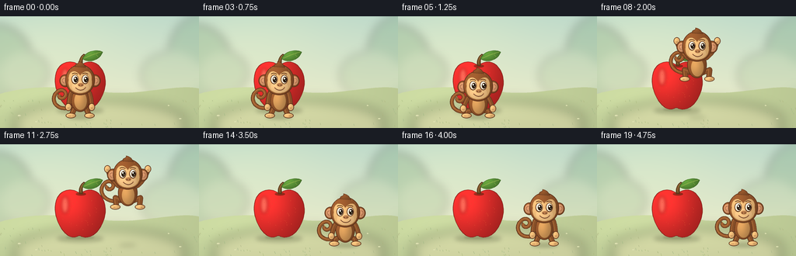
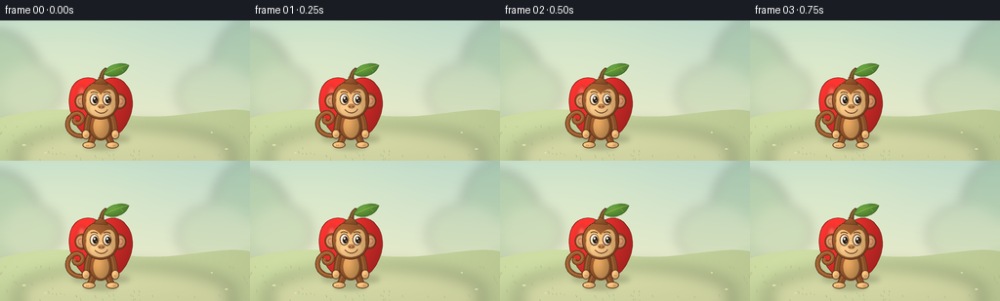

CODING AGENTS AS PIXEL WORLD MODELS
traex/GPT-6.1-Sol · dynamic_spatial_relationship_0060
点击播放 · 原生 RGB 像素
逐轮保存的候选
回放视频、检查图与代码变化。
每份候选均可单独播放。实际图片检查记录在下方工具轨迹中。
候选 01播放与检查图
点击播放 · 原生 RGB 像素


展开代码变化
--- 上一保存版本
+++ 本次保存版本
@@ -0,0 +1,300 @@
+"""Procedurally draw a supersampled, softly lit storybook animation.
+
+No external images, models, or renderers are used. All geometry is created here.
+"""
+from pathlib import Path
+import math
+import numpy as np
+from PIL import Image, ImageDraw, ImageFilter
+import artifact_io
+
+ROOT = Path(__file__).resolve().parent
+W, H, S = 256, 144, 4
+SIZE = (W*S, H*S)
+
+
+def bezier(start, *segments):
+ points = [start]
+ a = np.array(start, dtype=float)
+ for b, c, end in segments:
+ b, c, end = map(lambda v: np.array(v, dtype=float), (b, c, end))
+ for t in np.linspace(0, 1, 25)[1:]:
+ points.append(tuple((1-t)**3*a + 3*(1-t)**2*t*b + 3*(1-t)*t*t*c + t**3*end))
+ a = end
+ return points
+
+
+def line(im, pts, fill, width=1):
+ d = ImageDraw.Draw(im)
+ d.line([(round(x*S), round(y*S)) for x, y in pts], fill=fill,
+ width=max(1, round(width*S)), joint="curve")
+
+
+def shaded(im, pts=None, ellipse=None, color=(146, 85, 40), edge=None,
+ edge_width=.65, light=.24, texture=0):
+ if ellipse is not None:
+ x0, y0, x1, y1 = ellipse
+ else:
+ x0 = min(v[0] for v in pts)
+ y0 = min(v[1] for v in pts)
+ x1 = max(v[0] for v in pts)
+ y1 = max(v[1] for v in pts)
+ bx, by = math.floor(x0*S)-2, math.floor(y0*S)-2
+ bw, bh = math.ceil(x1*S)-bx+3, math.ceil(y1*S)-by+3
+ mask = Image.new("L", (bw, bh))
+ md = ImageDraw.Draw(mask)
+ if ellipse is not None:
+ md.ellipse((x0*S-bx, y0*S-by, x1*S-bx, y1*S-by), fill=255)
+ else:
+ md.polygon([(x*S-bx, y*S-by) for x, y in pts], fill=255)
+ yy, xx = np.mgrid[:bh, :bw].astype(float)
+ nx = ((xx+bx)/S - (x0+x1)/2) / max((x1-x0)/2, 1)
+ ny = ((yy+by)/S - (y0+y1)/2) / max((y1-y0)/2, 1)
+ glow = np.exp(-((nx+.4)**2/1.1 + (ny+.48)**2/1.7))
+ shade = 1 - light*.54 + light*1.28*glow - light*.20*nx - light*.12*ny
+ if texture:
+ shade += texture * (np.sin(xx*1.71+yy*3.3) + np.sin(xx*.37-yy*.81))
+ rgb = np.clip(np.array(color)[None, None, :] * shade[..., None], 0, 255).astype(np.uint8)
+ im.paste(Image.fromarray(rgb), (bx, by), mask)
+ if edge:
+ if ellipse is not None:
+ ImageDraw.Draw(im).ellipse(tuple(v*S for v in ellipse), outline=edge, width=max(1, round(edge_width*S)))
+ else:
+ line(im, pts+[pts[0]], edge, edge_width)
+
+
+def oval(im, x, y, rx, ry, color, edge=None, light=.24):
+ shaded(im, ellipse=(x-rx,y-ry,x+rx,y+ry), color=color, edge=edge, light=light)
+
+
+def soft_shadow(im, x, y, rx, ry, strength=80, blur=2.2):
+ layer = Image.new('RGBA', SIZE)
+ d = ImageDraw.Draw(layer)
+ d.ellipse(((x-rx)*S,(y-ry)*S,(x+rx)*S,(y+ry)*S), fill=(55,66,31,strength))
+ layer = layer.filter(ImageFilter.GaussianBlur(blur*S))
+ im.paste(layer, (0,0), layer)
+
+
+def background():
+ yy, xx = np.mgrid[:H*S,:W*S].astype(float)
+ y = yy/S
+ t = np.clip(y/110, 0, 1)
+ top = np.array([190,218,203])
+ bottom = np.array([232,235,202])
+ rgb = top[None,None,:]*(1-t[...,None]) + bottom[None,None,:]*t[...,None]
+ warmth = np.exp(-((xx/S-62)**2/12000 + (y-24)**2/3600))
+ rgb += warmth[...,None]*np.array([13,8,0])
+ im = Image.fromarray(np.uint8(np.clip(rgb,0,255)))
+ distant = Image.new('RGBA', SIZE)
+ d = ImageDraw.Draw(distant)
+ # Very soft distant foliage, kept away from the central action.
+ for x,y,rx,ry,c in [(-8,58,49,48,(127,167,123,86)),(32,73,31,27,(145,178,130,60)),
+ (255,55,39,55,(113,158,119,78)),(220,76,39,30,(151,180,132,52))]:
+ d.ellipse(((x-rx)*S,(y-ry)*S,(x+rx)*S,(y+ry)*S), fill=c)
+ distant = distant.filter(ImageFilter.GaussianBlur(6*S))
+ im.paste(distant, (0,0), distant)
+ path = bezier((0,100), ((46,87),(86,91),(139,98)), ((183,102),(225,87),(256,93)))
+ shaded(im, path+[(256,144),(0,144)], color=(194,208,154), light=.08)
+ # Pale sunlit patch of earth under both subjects.
+ patch = Image.new('RGBA', SIZE)
+ dp = ImageDraw.Draw(patch)
+ dp.ellipse((17*S,108*S,239*S,164*S), fill=(234,223,178,96))
+ patch = patch.filter(ImageFilter.GaussianBlur(8*S))
+ im.paste(patch,(0,0),patch)
+ rng = np.random.default_rng(63)
+ d = ImageDraw.Draw(im)
+ for _ in range(95):
+ x = rng.uniform(0,W)
+ y = rng.uniform(109,144)
+ if 55<x<218 and y<135:
+ continue
+ l = rng.uniform(1,3)
+ c = (158+rng.integers(0,18),178+rng.integers(0,12),122+rng.integers(0,18))
+ line(im, [(x,y),(x-.6,y-l)], tuple(map(int,c)), .45)
+ # A few small sunlit stones and clover leaves frame the action.
+ for x,y,r in [(25,128,2.2),(232,132,1.6),(47,136,1.6),(217,115,1.2)]:
+ oval(im,x,y,r,r*.42,(211,214,169),light=.1)
+ return im
+
+
+def apple(im):
+ soft_shadow(im,103,121.5,30,4.4,65,2.6)
+ soft_shadow(im,103,120,18,2,48,1.1)
+ # Broad shoulders, top notch, and gently indented bottom: unmistakable apple.
+ p = bezier((103,64),
+ ((92,53),(72,59),(71,79)),
+ ((69,93),(79,115),(91,119)),
+ ((98,121),(100,117),(103,117.8)),
+ ((110,122),(120,119),(126,111)),
+ ((137,97),(139,77),(129,66)),
+ ((122,56),(110,57),(103,64)))
+ shaded(im,p,color=(205,42,39),edge=(135,35,28),edge_width=.65,light=.31,texture=.003)
+ # Deep rounded recess where the stalk meets the fruit.
+ oval(im,104,64,6.5,2.0,(151,41,27),light=.1)
+ stem = bezier((102,64), ((101,59),(102,53),(107,49)),
+ ((108,48),(110,49),(109,51)), ((105,54),(106,60),(106,64)))
+ shaded(im,stem,color=(99,66,32),edge=(80,49,25),edge_width=.4)
+ line(im,bezier((104,62),((103,57),(105,52),(108,50))), (166,126,65),.7)
+ leaf = bezier((106,55),((111,42),(128,43),(132,46)),((127,58),(114,60),(106,55)))
+ shaded(im,leaf,color=(83,134,50),edge=(58,101,37),edge_width=.5,light=.28)
+ line(im,bezier((108,54),((115,51),(122,48),(130,46))), (148,178,76),.75)
+ line(im,[(117,51),(117,47)],(122,160,65),.4)
+ line(im,[(123,49),(126,52)],(122,160,65),.4)
+ # Apple sheen: soft, not an opaque painted stripe.
+ highlight = Image.new('RGBA',SIZE)
+ d = ImageDraw.Draw(highlight)
+ d.ellipse((79*S,67*S,88*S,89*S),fill=(255,220,172,84))
+ highlight = highlight.filter(ImageFilter.GaussianBlur(2.1*S))
+ im.paste(highlight,(0,0),highlight)
+ rng = np.random.default_rng(33)
+ for _ in range(40):
+ x,y = rng.uniform(80,127),rng.uniform(72,110)
+ if ((x-103)/28)**2+((y-88)/28)**2<.75:
+ oval(im,x,y,.25,.3,(220,78,48),light=.03)
+
+
+FUR=(135,79,40)
+DARK=(88,47,27)
+TAN=(224,175,112)
+
+
+def limb(im, points, width=6):
+ # Rounded long limbs with an offset highlight create a soft fur volume.
+ line(im,points,DARK,width+1.1)
+ for x,y in (points[0],points[-1]):
+ oval(im,x,y,(width+1.1)/2,(width+1.1)/2,DARK,light=0)
+ line(im,points,FUR,width)
+ for x,y in (points[0],points[-1]):
+ oval(im,x,y,width/2,width/2,FUR,light=.12)
+ line(im,[(x-1,y-.5) for x,y in points],(165,102,53),max(.6,width*.19))
+
+
+def monkey(im,x,ground,air=0,crouch=0,settle=0,frame=0):
+ # ground denotes the moving feet baseline. When airborne the body's shadow
+ # stays on the ground plane instead of following it up into the air.
+ actual_ground=129
+ height=max(0,actual_ground-ground)
+ soft_shadow(im,x,130,17-height*.13,3-height*.022,round(59-height*.45),2+height*.025)
+ body_y=ground-23+crouch*5
+ head_y=ground-47+crouch*8
+ # Curled prehensile tail, behind every other part of the monkey.
+ swing=math.sin(frame*.32)*1.0+air*6
+ tail=bezier((x-8,body_y+10),
+ ((x-29,body_y+19-swing),(x-39,body_y+3-swing),(x-31,body_y-7-swing)),
+ ((x-24,body_y-16-swing),(x-15,body_y-8-swing),(x-20,body_y-2-swing)),
+ ((x-24,body_y+2-swing),(x-29,body_y-2-swing),(x-26,body_y-5-swing)))
+ line(im,tail,DARK,5.0)
+ line(im,tail,(148,88,44),3.7)
+ line(im,[(a-.5,b-.4) for a,b in tail],(181,115,60),1.1)
+ # Back legs: fold during the flight, and compress during the anticipation.
+ for side in (-1,1):
+ hip=(x+side*6,body_y+10)
+ if air:
+ knee=(x+side*(13+4*air),ground-10-9*air)
+ foot=(x+side*(11+5*air),ground-2-5*air)
+ else:
+ knee=(x+side*(9+5*crouch),ground-7)
+ foot=(x+side*(11+3*crouch),ground-2)
+ limb(im,[hip,knee,foot],6.0)
+ oval(im,foot[0]+side*1,foot[1]+1,6.5,3.4,TAN,DARK,.2)
+ for n in range(2):
+ line(im,[(foot[0]+side*(2+n*1.4),foot[1]+.7),
+ (foot[0]+side*(2+n*1.4),foot[1]+2)],(159,110,63),.45)
+ oval(im,x,body_y,12.5,17,FUR,DARK,.28)
+ oval(im,x+.5,body_y+3,8,11.6,(198,143,82),None,.21)
+ # Long arms spread apart naturally at the apex of the jump.
+ for side in (-1,1):
+ shoulder=(x+side*10,body_y-9)
+ if air:
+ elbow=(x+side*(16+9*air),body_y-9-13*air)
+ hand=(x+side*(19+9*air),body_y-16-19*air)
+ else:
+ elbow=(x+side*(14+3*crouch),body_y+1)
+ hand=(x+side*(15+4*crouch),body_y+11-3*crouch)
+ points=bezier(shoulder, ((shoulder[0]+side*3,shoulder[1]+1),elbow,hand))
+ limb(im,points,5.2)
+ oval(im,hand[0],hand[1],4.1,4.8,TAN,DARK,.18)
+ for n in range(2):
+ line(im,[(hand[0]-1+n*1.5,hand[1]+.2),(hand[0]-.9+n*1.5,hand[1]+2.1)],(160,111,64),.42)
+ # Large side ears with lighter pink-tan inner ears.
+ for side in (-1,1):
+ oval(im,x+side*19,head_y+1,7.3,8,FUR,DARK,.24)
+ oval(im,x+side*20,head_y+1.1,4.7,5.7,(207,145,103),None,.14)
+ line(im,bezier((x+side*20,head_y+4),
+ ((x+side*24,head_y+3),(x+side*24,head_y-2),(x+side*20,head_y-2))), (169,107,73),.7)
+ oval(im,x,head_y,19,19.6,FUR,DARK,.27)
+ # Small crown tuft reinforces the monkey silhouette.
+ tuft=bezier((x-6,head_y-17),
+ ((x-8,head_y-22),(x-1,head_y-20),(x-2,head_y-24)),
+ ((x+4,head_y-23),(x+6,head_y-19),(x+7,head_y-16)))
+ shaded(im,tuft,color=FUR,edge=DARK,edge_width=.6,light=.17)
+ # Two-lobed, M-shaped face mask, unlike a teddy bear's separate muzzle.
+ face=bezier((x,head_y-6),
+ ((x-6,head_y-15),(x-16,head_y-12),(x-15,head_y)),
+ ((x-17,head_y+12),(x-8,head_y+17),(x,head_y+17)),
+ ((x+10,head_y+17),(x+17,head_y+10),(x+15,head_y)),
+ ((x+16,head_y-12),(x+7,head_y-15),(x,head_y-6)))
+ shaded(im,face,color=TAN,edge=(166,112,63),edge_width=.4,light=.17)
+ oval(im,x+.4,head_y+9,11,7.6,(232,186,126),None,.14)
+ for side in (-1,1):
+ ex=x+side*6.6
+ ey=head_y-.7
+ # Eye sockets, ivory sclera, rich brown pupils, reflected catchlights.
+ oval(im,ex,ey,4.6,6.0,(108,65,37),None,.1)
+ oval(im,ex+.15,ey-.1,3.7,5.0,(255,247,218),None,.09)
+ oval(im,ex+1.0,ey+.25,2.65,3.65,(65,37,21),None,.15)
+ oval(im,ex+1.1,ey+.35,1.65,2.8,(30,24,17),None,.06)
+ oval(im,ex+.3,ey-1.2,.95,1.1,(255,255,239),None,0)
+ oval(im,ex+1.9,ey+1.4,.35,.45,(230,212,168),None,0)
+ brow=bezier((ex-3.7,ey-7),((ex-1.7,ey-8.9),(ex+1.5,ey-8.5),(ex+3.5,ey-6.7)))
+ line(im,brow,(101,58,30),1.0)
+ # Broad small nostrils and an expressive smile.
+ oval(im,x+.8,head_y+6.3,3.7,2.3,(180,121,73),None,.1)
+ for side in (-1,1):
+ oval(im,x+.8+side*1.7,head_y+6.8,.65,.55,(104,63,39),None,0)
+ smile=bezier((x-5.4,head_y+10.2),((x-2,head_y+14),(x+4,head_y+14),(x+7,head_y+9.7)))
+ line(im,smile,(108,64,40),1)
+ oval(im,x-5.5,head_y+10.2,.65,.65,(159,97,62),None,0)
+ oval(im,x+7,head_y+9.7,.65,.65,(159,97,62),None,0)
+ # A handful of tiny fur wisps on the scalp and shoulders.
+ for dx,dy in [(-12,-13),(-9,-16),(9,-15),(13,-11)]:
+ line(im,[(x+dx,head_y+dy),(x+dx-.7,head_y+dy-1.4)],(172,109,56),.45)
+
+
+def main():
+ bg=background()
+ frames=[]
+ for f in range(20):
+ im=bg.copy()
+ apple(im)
+ x,g,air,crouch=103,129,0,0
+ if f<=3:
+ g-=.35*math.sin(f*1.1)
+ elif f==4:
+ crouch=.45
+ elif f==5:
+ crouch=1
+ elif f==6:
+ x=105
+ crouch=.55
+ elif 7<=f<=13:
+ p=(f-6)/7
+ x=105+83*p
+ g=129-53*4*p*(1-p)
+ air=math.sin(math.pi*p)
+ elif f==14:
+ x=188
+ crouch=.7
+ elif f==15:
+ x=188
+ crouch=.25
+ else:
+ x=188
+ g-=.4*math.sin((f-16)*.8)
+ monkey(im,x,g,air,crouch,frame=f)
+ frames.append(np.asarray(im.resize((W,H),Image.Resampling.LANCZOS).convert('RGB')))
+ artifact_io.save(np.stack(frames).astype(np.uint8),ROOT)
+
+
+if __name__=='__main__':
+ main()
可观测工具轨迹
实际执行的命令与返回图片。
命令 1exit 0
/bin/bash -lc 'ls -la && cat prompt.txt && cat GENERATION_RULES.md && cat task_spec.json'
命令 2exit 0
/bin/bash -lc 'cat artifact_io.py'
命令 3exit 0
/bin/bash -lc "python generate.py && python - <<'PY'
from pathlib import Path
import numpy as np
from PIL import Image
p=Path('.')
a=np.load('pixels.npz')['pixels']
assert a.shape==(144,256,20)
assert len(list((p/'frames').glob('*.png')))==20
for f in (0,9,19):
im=Image.open(p/'frames'/f'{f:02d}.png')
assert im.size==(256,144) and im.mode=='RGB'
print('Validated 20 RGB frames at 256 x 144; pixels.npz and index.html created.')
PY"命令 4exit 0
/bin/bash -lc 'command -v ffmpeg || true'
保存候选 1 份；完成命令 4 次；可验证图片返回 0 张。原始 API 响应与完整日志保留在本地。